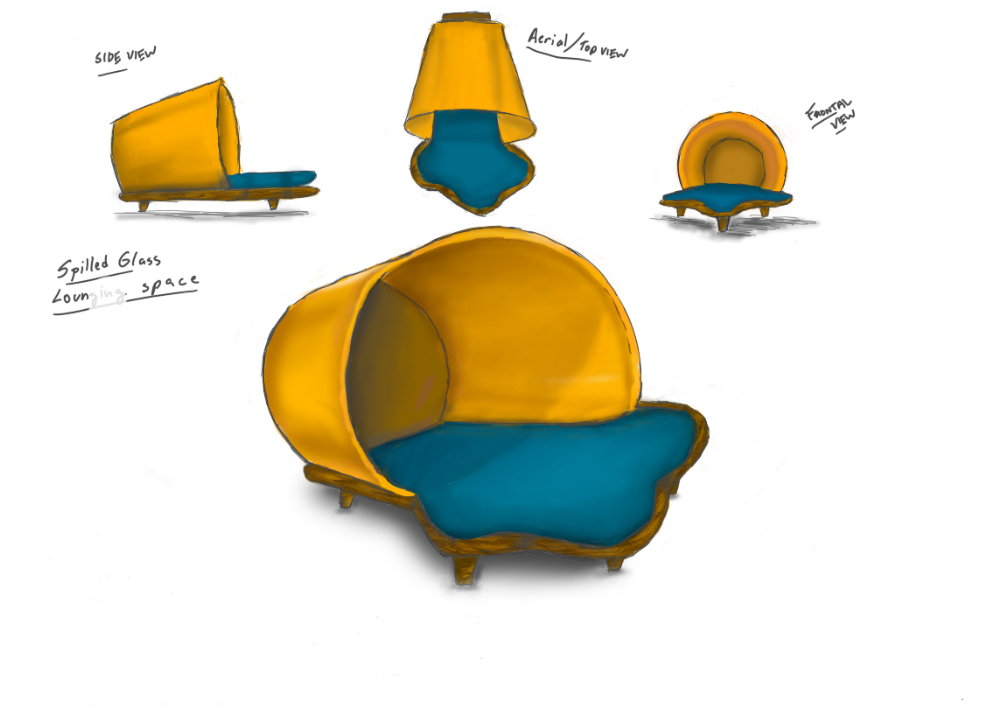

Spilled Glass Lounging
This out of the ordinary lounging chair, inspired by Kartavya's ongoing childhood of spilling glasses, is meant to be a personal space used in public spaces such as airports and malls for lounging, pools, or reading in libraries etc. A place to detach from the world and relax. This lounging space comes in a modular system of three parts: Blue cushion, Wooden Platform, and Cup Frame.
2020
Playful Furniture